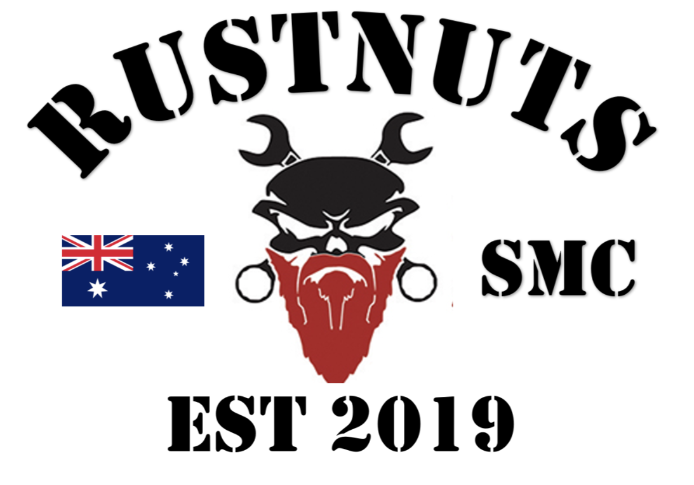

App privacy policy
Last updated 03/11/2026
This page now lives at www.rustnutssmc.com.au/app/privacy.html.
This is how the Rustnuts app looks after your information: what it collects, why, who sees it, where it goes and what you can do about it. We’ve kept it in plain English.
Who we are
The Rustnuts app is run by Rustnuts Social Motorcycle Club Incorporated (“the club”, “we”), a social motorcycle club based in Greater Melbourne, Victoria, Australia. It is built by the club for its members, FNGs, supporters and their families.
We follow the Australian Privacy Principles in the Privacy Act 1988. For anything in this policy, email us at apps@rustnutssmc.com.au.
What we collect
Mostly what you put into the app, plus what the club records about your membership and what the app needs to work. When the club first moves its member roster into the app, your board may load your email, mobile, emergency contact and bike registration from the club’s existing records before you sign in; you can check and change them on the Me screen.
- Your account: your email address, used to sign you in with a one-time code. There are no passwords.
- Your membership: your name, road name, chapter, membership status and dates (introduced, FNG, patched), who introduced you, your application note, positions you hold and your membership card.
- Your contact details: your mobile number and your emergency contacts (their name, relationship and phone number).
- Your profile, if you add them: a short bio, your birthday (day and month only, no year), your bikes, and each bike’s registration and expiry.
- Rider details, if you add them: your licence class and expiry, and your first aid expiry.
- Club life: ride RSVPs and sign-ups, check-ins and attendance, meeting apologies and notices, votes and ballots, Road Rules sign-offs, Rusty Bus bookings and logs, ride routes and route files you upload, merch orders, swap and sell listings, build threads, nominations and awards, skills you offer and mechanic reviews.
- Club shop orders: what you order (designs, sizes, colours and how many), the email and mobile for the invoice, and how you get it. If you choose shipping, your delivery address goes on the order, and on your profile too if you tick “Save for next time” (you can change it at each order, or ask us to clear it).
- Chats: your messages, reactions, photos, videos, GIFs, voice notes and links, how far you’ve read in each chat, which members you’ve blocked, and any message you report.
- Feedback & issues: if you send a report, what you write, where in the app it happened, a screenshot if you add one, and the app version, build and device (phone type and system version) it came from. It’s linked to your account and read by the app keepers (the chapter Treasurers and the NEC Chair and Secretary, who look after the app) so they can fix things and reply.
- Money: the fees and charges the club raises for you, the payments you tell us you’ve made (amount, date, method and your reference) and the receipts the treasurer issues. The app never asks for or stores card or bank numbers of yours.
- Club records: where the constitution needs them, board decisions about your membership and conduct records. If your board excuses you from a check-in or a Big 4 ride, the reason is recorded, which can be health or injury; only you, your chapter’s board, the club’s national office-bearers and (for check-in excusals) the club’s Auditor see it.
- Your location, speed and direction, only during a live ride you’ve turned on (see “Location” below).
- Forms on the club website (rustnutssmc.com.au): if you send a join enquiry, your name, email, chapter and note go to that chapter’s board; if you sign up for a charity ride, your name, email, phone and answers go only to the people running that ride and are deleted with it. Neither form needs an account.
- Your phone: a push notification token so the app can send you alerts, your notification settings, and which device type you use (iPhone or Android). Like most online services, our servers also log the IP address and device details of each sign-in, for security.
We don’t read your phone’s contacts, your browsing, advertising identifiers or anything from other apps. There’s no advertising code in the app and no analytics of the club’s own, but on Android two Google parts the app uses (the Maps SDK that draws ride maps, and ML Kit, which reads the check-in code) send Google usage and diagnostic data; see “Services that help run the app”. The club website (rustnutssmc.com.au) counts page views per day per page so the board knows which pages get read: the count keeps no cookies, no addresses, no device details and nothing about who, and it skips browsers that ask not to be tracked. (The ping passes through the same servers as the app, whose short-lived request logs are covered below under “Services that help run the app”.)
Why we use it
- To run your membership under the club’s constitution: applications, status changes, fees, meetings, votes and records.
- To organise rides safely: who’s coming, crews, briefings, where riders are during a live ride, and who to call in an emergency.
- To let members talk to each other in club chats and ride comms.
- To keep the club’s books and issue receipts.
- To send you notifications you’ve chosen, like new messages, ride changes and reminders.
- To answer what you ask Ask the club, and to do the things you confirm there.
- To keep accounts and the club’s records secure, deal with reported messages and posts, and find and fix problems, including the usage and crash data Google’s map and code-scanner parts collect on Android.
We don’t sell your information or share it with anyone for their own marketing, and there are no ad networks or ads aimed at you: the only ads in the app are the club’s own sponsors and their member deals. Chat photos the crew puts on the public club website are there to promote the club (see “Who in the club can see it”).
Who in the club can see it
The app’s rules decide who sees what, and the database enforces them:
- Approved members see each other’s names, road names, chapter, status, bio, birthday (day and month), bikes and photos, and the chats they are part of.
- Your mobile number is seen by your chapter’s board and the club’s national office-bearers, and by other members only if you turn on “Share my mobile with members”. During a live ride, the riders sharing on it can see the ride leaders’ numbers.
- Your email, licence and first aid details, bike registrations and emergency contacts are seen by you, your chapter’s board and the club’s national office-bearers. If you raise an emergency or “I’m out” alert on a live ride, the ride leaders also see your mobile and emergency contacts so they can help.
- Your club shop orders are seen by you and the people who run the shop: the NEC Chair and Secretary, the Presidents and Treasurers, and anyone they name to help run it. A delivery address saved on your profile is seen by you, your chapter’s board and the club’s national office-bearers.
- Your fees and payments are seen by you, your chapter’s board (including its treasurer), the club’s national office-bearers and the club’s Auditor.
- Conduct records are seen by you, the board and, if you appeal, the appeal panel. They are deleted on the schedule the constitution sets.
- Family accounts see the home screen, the ride calendar, their own details and the Family chat (the one club chat members share with Family, where they can read and post). In the Family chat they see what’s posted there and the first name, road name, chapter and status of whoever posts or reacts. They don’t see the other chats, the member directory or members’ contact details.
- The Social Media Officer, their crew and the NEC can put photos from the club’s chats on the public club website, without asking the person who posted them first. Photos from one-to-one chats and the Family chat never go there, and videos never do. The website doesn’t say who posted a photo, though a caption the crew writes could name someone. If someone else puts one of your photos up, you get a heads-up once it’s up (when notifications are on), and you can take it down in the app any time; it can still load for about an hour after.
- Anyone who opens the app, signed in or not, sees only the club’s public information: chapters, sponsors and club links.
Location
The app uses your location only when you start sharing on a live ride. While it’s on, the other riders sharing on that ride can see where you are, how fast and which way you’re heading on a map, and the app can keep sharing while your screen is off. It switches itself off when you stop, when the ride ends, or at the switch-off time.
We don’t keep a history of where you’ve been. Only your latest position is stored, and it’s deleted when you stop sharing. Any alert you raise during the ride (like “I’ve stopped” or an emergency) keeps the place you raised it until the ride’s live window closes, two hours after the ride’s planned finish (or midnight if it has none), and is then deleted with everything else from the ride.
Ride weather and maps use the ride’s route and meeting places, not your own location.
Camera, photos, microphone and voice
- Camera: only when you take a photo or video to share, or scan the club’s check-in code. On Android, Google’s ML Kit reads the code on your phone; the picture stays on the phone.
- Photos and videos: only the ones you pick to share. Photos are resized before they upload. They’re stored privately and only people who can see that chat, listing or post can open them, except a photo the crew puts on the public club website (see above), or a photo on a message someone reports, which the people who deal with the report can open (for a private chat, the reporter’s chapter board).
- Microphone: for voice notes you record and for ride comms. Ride comms is live voice between riders on the same ride. It isn’t recorded.
Services that help run the app
We use these companies to run the app. Each one only gets what it needs for its job:
- Supabase stores the club’s data and files. Our database is in Sydney, Australia.
- Google (Gmail) sends your sign-in code emails from the club’s email account.
- Expo delivers app updates and passes notifications to Google Firebase Cloud Messaging (Android) and Apple Push Notification service (iPhone). They see your device’s push token and the text of each notification. When the app checks for an update it also sends Expo a random install ID and, if an update failed to start, the crash error it gave; we use that to fix problems, and it isn’t tied to you or your account. On Android, Firebase also gets an installation ID, the app version and device details when the app first starts.
- LiveKit carries ride comms voice between riders, live. It isn’t recorded. LiveKit gets each rider’s member ID, short name and the ride’s room, plus the phone’s internet (IP) address and device details, and keeps a record of each session.
- Open-Meteo gives ride weather. Your phone asks it directly, so it gets the ride’s route points and places and your phone’s internet (IP) address, but not your name or account.
- Google Maps (on Android) and Apple Maps (on iPhone) draw ride maps. On Android, Google’s Maps SDK sends Google your phone’s internet (IP) address, device and app details, a random ID, crash reports and how the map is moved and zoomed, which Google handles under its own terms. If you tap Navigate, the route opens in your maps app, under that app’s own privacy terms.
- Google ML Kit (on Android) reads the club’s check-in code on your phone. The picture stays on the phone; Google gets a random install ID and usage and diagnostic data about the scanner.
- GIPHY supplies GIFs for chats. Your phone asks it directly, so it gets the words you search for and your phone’s internet (IP) address, and GIFs in chats load from its servers. GIPHY handles that under its own privacy policy.
- Link previews: when you post a link, our server fetches the page to get its title. The preview picture then loads from that website, so the website sees the internet (IP) address of each phone that shows it.
- Anthropic (Claude) answers Ask the club. When you ask it something, your question, the chat so far and a summary of what you can already see in the app (the ride calendar, the Rusty Bus, your own fees, members’ names and roles, and the chats you can post in) go to Anthropic to answer. Anthropic doesn’t train its models on them, normally deletes them within 30 days (longer only if they’re flagged for a safety check) and handles them under its commercial privacy terms. Nothing is done in the app until you tap Confirm.
- Anthropic also sums up chats when a member taps Catch me up: the chat’s newest messages (who wrote them, when and what they said) go to Anthropic to write the summary, under the same terms. The summary isn’t kept by the club.
- Ask the club and Catch me up each ask your permission in the app, naming Anthropic, before you first use them. Nothing goes to Anthropic from either until you say yes.
- Anthropic also drafts meeting minutes when a board member uses Draft from Otter: the meeting’s transcript (what was said, as the secretary’s Otter.ai account wrote it down), the agenda, the board’s roles and the names, road names, chapters and membership status of members who could have been there go to Anthropic to write a draft, under the same terms. The board member checks the draft before anything is saved.
- Club shop orders go to the club’s order system so the shop can number them and email your invoice: Make.com runs the club’s order automation, Google Sheets, Docs and Drive hold the club’s order log and invoices, and Resend sends the invoice email. They see your name, road name, email, mobile, delivery address and the items you ordered.
- Ride files you send to Garmin or another app, and things you share out of the app, go only where you choose to send them.
Some of these companies may handle data outside Australia, such as in the United States. We pick providers that protect it, and we only send what each needs.
Keeping it safe
Everything travels encrypted between the app and our servers. Every table and file in the database has rules that limit who can read or change it, so the app can’t show a member something the rules don’t allow. Only a few club officers who build and run the app can reach the system directly.
If there’s ever a data breach likely to cause serious harm, we’ll tell the people affected and the Office of the Australian Information Commissioner, as the law requires.
How long we keep it
- Live ride locations: deleted when you stop sharing, and anything left from the ride (including alerts) once its live window closes.
- Notification queue: deleted after 90 days.
- Ask the club: the club doesn’t keep your questions or the answers. They stay on your phone for that chat only. The club keeps a count of how many questions each member asks a day (cleared after two days) and what each month costs. Catch me up: the summary isn’t kept, and each one counts as one of the day’s questions. Draft from Otter: the club doesn’t keep the transcript, only the minutes the board saves, and a count of how many times each meeting was drafted.
- Conduct records: deleted on the dates the constitution sets.
- Financial records, receipts, meeting minutes and votes: kept for at least 7 years, and longer while the club still needs them. That meets the record-keeping rules for Victorian incorporated associations (7 years) and the tax office (5 years).
- Your account and profile: until you delete your account. That removes your sign-in, profile, contact details, emergency contacts, bikes, messages, ride sign-ups and listings straight away. The club keeps its books, minutes, votes, attendance, conduct records, past board seats, Rusty Bus bookings and logs, routes you uploaded and past merch orders, showing you as “Former member”, and clears your photo files. Anything someone has reported (a message, a post or your profile) is kept as it was when reported, for the board to deal with. If you’re on the website photo crew, photos you put on the club website straight from your phone stay up until someone takes them down. If the club loaded your place from its member roster, the roster keeps your name, email, membership level and dates, so your membership history stands and a deleted account can’t be used to take that place back without the board. Copies of your club shop orders in the order system (Make.com, Google Sheets, Docs and Drive, and Resend) stay as club financial records.
Your choices and rights
- See and fix your details: most of your information is on the Me screen, where you can change it. For anything else, ask us.
- Turn things off: location sharing, notifications and phone sharing are all your choice, and you can change them any time in the app or your phone settings.
- Delete your account: in the app, go to Me and tap Delete my account (if you hold a board or national seat, step down first; the National Chairman’s seat changes by the club’s vote, so the Chairman emails us instead). Or email apps@rustnutssmc.com.au from the email you sign in with and we’ll delete it within 30 days. Deleting your app account doesn’t end your club membership.
- Get a copy: ask at apps@rustnutssmc.com.au and we’ll send you the information we hold about you.
Children
The app is for adults, Family accounts included. The app’s join form asks everyone to confirm they’re 18 or over. It isn’t meant for anyone under 18, and we don’t knowingly collect information from children.
Questions and complaints
Email apps@rustnutssmc.com.au. We’ll reply within 30 days. If you’re not happy with our answer, you can complain to the Office of the Australian Information Commissioner at oaic.gov.au or on 1300 363 992.
Changes to this policy
If we change how the app uses your information, we’ll update this policy and the date at the top, and tell members in the app if the change matters.